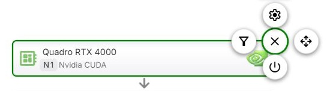
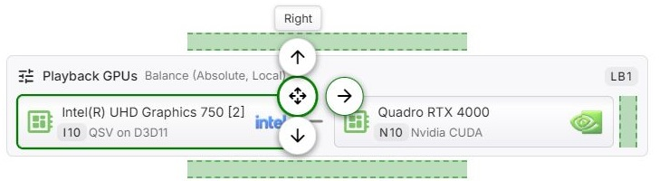
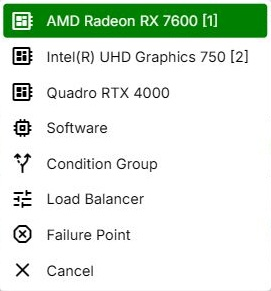

Editing the Graph
Each item in the configuration graph is a node. In Advanced Mode and Expert Mode, every node has its own menu - the fly-out - through which it is configured, switched on and off, moved, and in Expert Mode inserted and removed. Basic Mode has no fly-out: there the graph only shows the result of the Hardware acceleration selection - see Basic Mode.
Opening the Menu
Click or tap a node, or press Enter or Space while it has the focus. The menu opens at the node's top right corner, as round icon buttons arranged around a Close button in the middle. Hovering over a button, or moving the focus to it, shows its name above the menu.

Escape, Close, a click on empty space or another click on the node closes the menu again.
A double-click on a node opens its configuration directly - Configure, or Balancing for a load balancing group.
Commands
The menu only shows the commands that apply to the node. Each command keeps its position, so it is always found in the same place:
| Position | Command |
|---|---|
| Above the middle | Configure or Balancing, and above that Limits |
| Left | Conditions, and further left Remove |
| Right | Move |
| Below the middle | Disable or Enable, and below that Insert |
Configure opens the settings of the node. For a device node, these are the device's encoders, decoders, filters, subtitles and options - see Device Configuration and GPU Config. For a condition group, it is the group's name. The command is not offered for a device that is not present on this system, nor in Advanced Mode for a device that is switched off.
Balancing takes the place of Configure on a load balancing group and opens its distribution settings and its name - see Load Balancing.
Conditions decides which operations the node applies to. Advanced Mode offers a list of operation kinds - see Conditions. Expert Mode offers the condition builder - see Node Conditions. Not offered on the software node in Advanced Mode.
Disable and Enable switch the node off and on. A switched-off node stays in the graph with its configuration, but takes no part in evaluation - for a group, that includes everything inside it. In Advanced Mode a switched-off device moves below the divider, and its menu only offers Enable - see Switching Devices Off. The software node in Advanced Mode cannot be switched off.
Move lets the node be moved to another position - see Moving a Node.
Limits is offered in Expert Mode on a device node directly inside a load balancing group. It sets the maximum number of operations running in parallel, for this node and for the device everywhere in the graph - see Limits.
Insert adds a new node, in Expert Mode - see Inserting a Node.
Remove deletes the node, in Expert Mode, after a confirmation. Removing a group removes everything inside it.
Whether a device node is a fallback point is not a command of the menu but a setting at the end of its configuration dialog, under Evaluation - see Fallback Paths.
Moving a Node
After Move, the menu shrinks to the directions in which the node can go - Top, Bottom, Left and Right - and the graph marks each possible position with a dashed band. Click a band, or press the arrow key for that direction, to move the node one step. Moving stays active after each step, so the node can be moved step by step until it is where you want it. Click Move again, press Escape, or click elsewhere to stop.

In Advanced Mode, only devices that are switched on and present can be moved, and only among each other - the software node always stays at the end.
In Expert Mode, moving a node towards a group moves it into that group, and a node inside a group can be moved out of it again. Groups cannot be placed inside other groups.
Inserting a Node
Insert opens a list of what can be added at that position:
- every device that is present, with the software option last. Remote devices start with the ID of their remote host, for example R1:. The same device can be added more than once - with a different configuration each time, for example. Devices of a remote host that is switched off are not offered.
- Condition Group, Load Balancer and Failure Point - groups only at the top level of the graph. Inside a group, only devices and failure points can be added.
The new node is inserted after the node the menu was opened on, or at the end of the group when the menu was opened on a group. Moving starts right away, so the node can be put into place.

Reading the Graph
- IDs - every node carries a short ID that identifies it, made up of a letter for its kind and a number: N Nvidia, I Intel, A AMD, V Apple, R Rockchip, M Android, S software, CG condition group, LB load balancing group, E failure point. Nodes of remote devices start with the host's ID, for example R1:N 2. The FFmpeg log refers to nodes by the same IDs. IDs are not shown in Basic Mode.
- Arrows - a downward arrow leads to the node that is tried next. Inside a condition group, and inside a load balancing group that distributes by overflow, the arrows point to the right. A load balancing group that balances the load joins its nodes with plain lines instead, since none of them comes first.
- Green borders and arrows mark fallback points, red ones failure points - see Visual Indication of Fallback and Failure Points.
- Faded nodes are switched off. Inside a group that is switched off, nodes are faded as well and offer no commands.
- Unavailable, with a dashed border, marks a device that is not present on this system. Host disabled marks a device of a remote host that is switched off.
- Conditions of a node are summarized at its bottom, next to a filter icon.
Saving
Changes take effect only when the configuration is saved - see Saving.